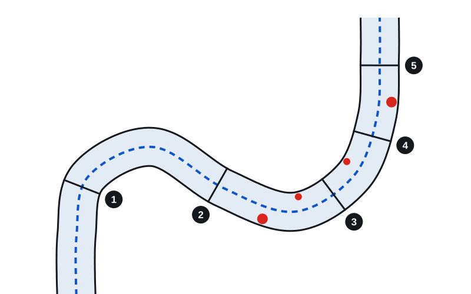

Soft robotic colonoscope
A soft robot that has to navigate a colon phantom, remove polyps and come back out without pressing too hard on the walls, for the Robotic Materials competition at ETH.
- Course
- Robotic Materials
- School
- ETH Zurich, master's in robotics
- Semester
- Autumn 2026
- Status
- In development, competition on 14 December 2026
- Grade
- Ungraded

The challenge
Conventional colonoscopes are stiff and pushed from outside, which is uncomfortable and can injure the tissue; a soft robot follows the bends instead. In the competition, the robot enters a transparent polyurethane colon phantom through an elastic 30 mm opening, takes a sharp turn of about 90° in the sigmoid and goes up to the top of the descending colon, about 400 mm deep. There is no camera: we steer by looking through the phantom. The phantom stands on load cells, and every 2-second window where the net force on the wall goes over 2 N costs a point.
How it is scored
- 1 Navigation (30 points) 5 points per landmark reached, from the rectum to the top of the descending colon, then 5 more for pulling the robot back out.
- 2 Force sensing (15 points) The robot measures how hard it presses on the wall. A control run without sensing shows whether the feedback changes the completion time, the peak force and the number of high-force events.
- 3 Polyp removal (15 points) 3 points per polyp removed (3 to 5 polyps of 6 or 10 mm), plus 6 if one is brought back out for a biopsy.
- 4 Gentle procedure (10 bonus points) The net force on the phantom never goes over 2 N, once the robot has reached at least landmark 3.
Our robot
In development. The design, the sensing and the competition result will be added after 14 December 2026.